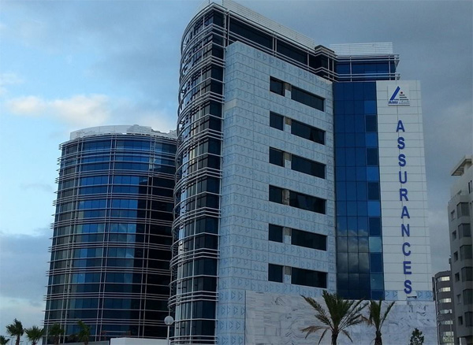

<div class="card">
    <div class="card-body">
        <h4 class="card-title">About AMI ASSURANCE</h4>
        <h5 class="card-subtitle text-muted">AMI Assurances was established in 2003 following the transfer of the portfolio from the cooperative insurance and reinsurance company Ittihad. It began operations in October of the same year. It operated as a mutual company until December 28, 2013, when it transitioned from a mutual company to a public limited company, following a decision made by the Extraordinary General Assembly. Since 2014, AMI Assurances has held the status of a public limited company and, in 2018, it acquired a share capital of 87 million DT.


        </h5>

                <div class="my-4">
            
        
</div>